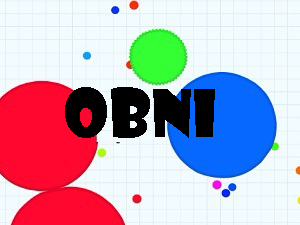

Java
Premièrement, voici une classe Java: "OBNI", soit Objet Bougeant Non Identifié, partant du même principe que le jeu Agar.io

Appuyez ici pour télécharger le code
Vous pouvez trouver la classe OBNI et son application dans /src. Vous pouvez ensuite l'ouvrir avec un interpreteur de code.